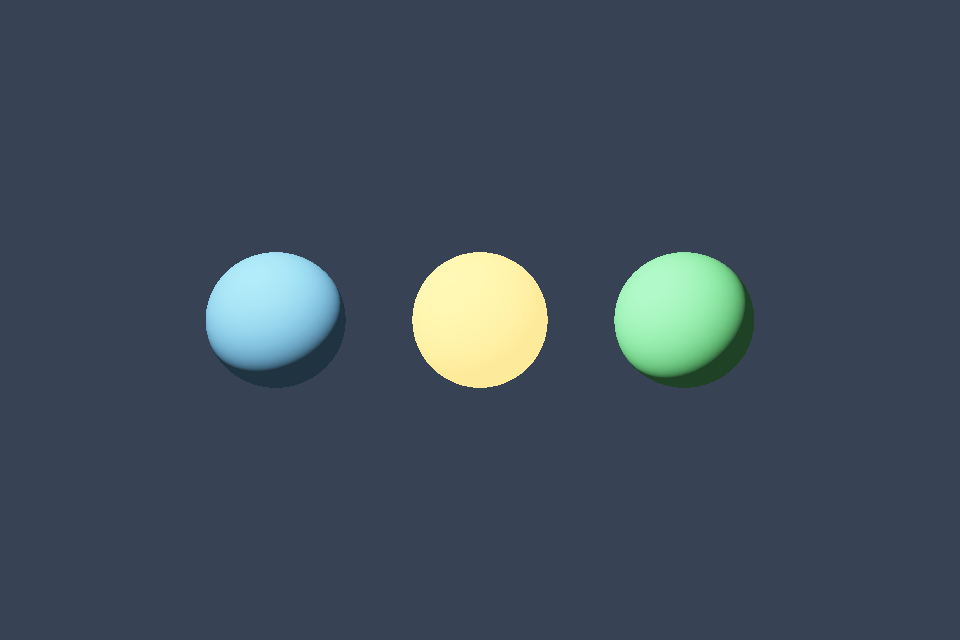

第 21 课：线性颜色与 HDR
课程首页 · 上一课 · 下一课
目标与运行
cd OpenGL
.\scripts\run.ps1 -Lesson 21_hdr
预期画面：三颗高亮球；上下箭头调整曝光，空格暂时关闭 tone mapping。
相机：W/A/S/D 移动，Q/E 升降，按住右键转向，Esc 退出。
代码阅读顺序
RenderTarget 的 RGBA16F → hdr_scene.frag → tone.frag
从本课 main.cpp 进入；公共工具在 common，GLSL 在 shaders。先画出每一遍读什么、写什么，再逐个展开辅助类。
原理与实现
光照叠加可超过 1，归一化 RGB8 会在写入时截断这些信息。RGBA16F 保留更大范围的浮点亮度，使曝光、Bloom 与色调映射能够在显示前处理高亮。
线性工作流分三步：颜色贴图按 sRGB 解码，在线性空间进行光照与叠加，显示前再编码。数值贴图、法线、HDR 文件保持线性。本课用指数映射 LDR=1-exp(-HDR*exposure)，然后以 pow(color,1/2.2) 做简化 Gamma 编码；最后这一步近似 sRGB 曲线，而不是精确分段传递函数。
示例没有启用 GL_FRAMEBUFFER_SRGB，因为 tone shader 已经手动编码。如果再启用自动编码会造成双重 Gamma。若改成自动 sRGB，应申请支持 sRGB 的窗口并移除手工编码，且确认所有中间纹理的格式。
曝光改变传感器/显示对场景的响应，不应修改材质 baseColor 去抵消过曝。空格关闭 tone mapping 后仍进行显示编码，超过 1 的结果在最终缓冲裁剪，高亮细节因此丢失。
修改练习
分别调高灯强和曝光，解释区别；加入 Reinhard 映射并对比；把附件换 RGB8 看高光信息丢失。
修改后重新执行 cmake --build build --config Debug --target 21_hdr --parallel。GLSL、模型、图片会复制到程序旁的 shaders/assets 目录。源文件应修改教程根目录下的版本，运行目录的副本会被下一次构建覆盖。
自测与参考答案
HDR 是否意味着最终显示一定支持 HDR 显示器？
不是。这里是内部高动态范围渲染，最终仍映射到普通窗口显示范围。
检查与排错
运行 21_hdr.exe --smoke 可执行确定时间的四帧渲染检查。重要技术开关还可用 --smoke --variant --capture 与默认抓图对比。共享工具会检查 GL 错误、非背景像素和图像动态范围，但这不能代替人工核对技术含义。参见 进阶排错。
参考截图
以下为课程自带素材、固定时间 1 秒时的实际渲染；你的相机与操作改变后画面会不同。

查看按住空格时的对照图